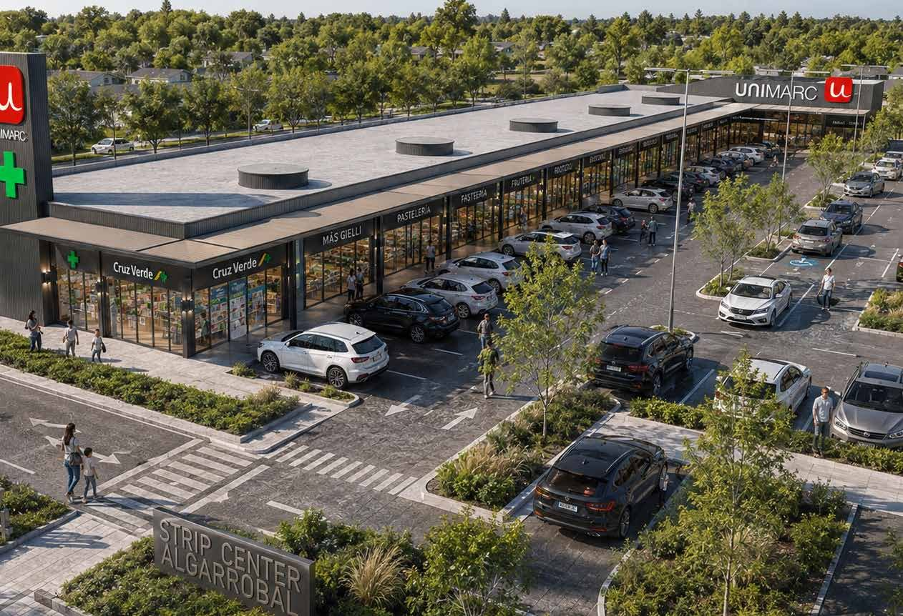

<!-- ════════════════════════════════════════════════════════════════════════
     SECCIÓN 04 — BANDA CON LA TARJETA DE DATOS
     ────────────────────────────────────────────────────────────────────
     Vista previa:  vista-previa/04-*.jpg
     Archivos que usa:
       · recursos/imagenes/banda-render.jpg
     Nota: La foto de fondo se mueve en parallax (la mueve el script de la sección 99).
     ════════════════════════════════════════════════════════════════════
     Pega TODO este archivo dentro de un bloque «HTML personalizado».
     Antes tiene que estar pegado UNA sola vez 00-estilos-base.html.
     ════════════════════════════════════════════════════════════════════════ -->
<style>
/* ── BANDA CON TARJETA DE DATOS ───────────────────────────────── */
.banda-datos{position:relative;min-height:clamp(460px,58vw,720px);display:flex;align-items:center;
  overflow:hidden;background:#20242a}
.banda-datos .fondo{position:absolute;inset:-8% 0;z-index:0}
.banda-datos .fondo img{width:100%;height:100%;object-fit:cover;object-position:center 40%}
.banda-datos .contenedor{position:relative;z-index:2;display:flex;justify-content:flex-end;
  padding-top:70px;padding-bottom:70px}
.tarjeta-vidrio{width:min(100%,720px);background:rgba(30,32,36,.30);
  -webkit-backdrop-filter:blur(16px);backdrop-filter:blur(16px);
  border:1px solid rgba(255,255,255,.28);border-radius:var(--radio);
  padding:clamp(26px,3.4vw,44px);display:grid;grid-template-columns:1fr 1fr 1.15fr;
  gap:clamp(18px,2.4vw,34px);box-shadow:0 24px 60px rgba(0,0,0,.24)}
.tarjeta-vidrio .celda{color:#fff;text-shadow:0 1px 3px rgba(0,0,0,.42)}
.tarjeta-vidrio .cifra{color:var(--rojo);font-size:clamp(1.25rem,2.1vw,1.85rem);font-weight:700;
  line-height:1.1;letter-spacing:-.01em}
.tarjeta-vidrio .cifra sup{font-size:.58em;vertical-align:super}
.tarjeta-vidrio .rotulo{font-weight:600;font-size:.98rem;margin:4px 0 8px}
.tarjeta-vidrio p{font-size:.86rem;line-height:1.5;color:rgba(255,255,255,.94)}
.tarjeta-vidrio .celda:first-child p{font-size:.92rem;font-weight:500}

</style>

<!-- ════════════ BANDA CON TARJETA DE DATOS ════════════ -->
<section class="banda-datos">
  <div class="fondo parallax" data-parallax="0.14">
    
  </div>
  <div class="contenedor">
    <div class="tarjeta-vidrio fade-up">
      <div class="celda">
        <p>Proyecto anclado por supermercado Unimarc y Farmacia Cruz Verde con contratos a largo plazo</p>
      </div>
      <div class="celda">
        <div class="cifra">15.446 m<sup>2</sup></div>
        <div class="rotulo">De terreno</div>
        <p>Ubicado en un entorno de alto crecimiento residencial y comercial.</p>
      </div>
      <div class="celda">
        <div class="cifra">ABC1, C2 y C3</div>
        <div class="rotulo">segmento predominante</div>
        <p>La comuna concentra un 63% de hogares pertenecientes a estos segmentos, consolidándose
          como un mercado altamente atractivo para el desarrollo de nuevos operadores comerciales.</p>
      </div>
    </div>
  </div>
</section>
